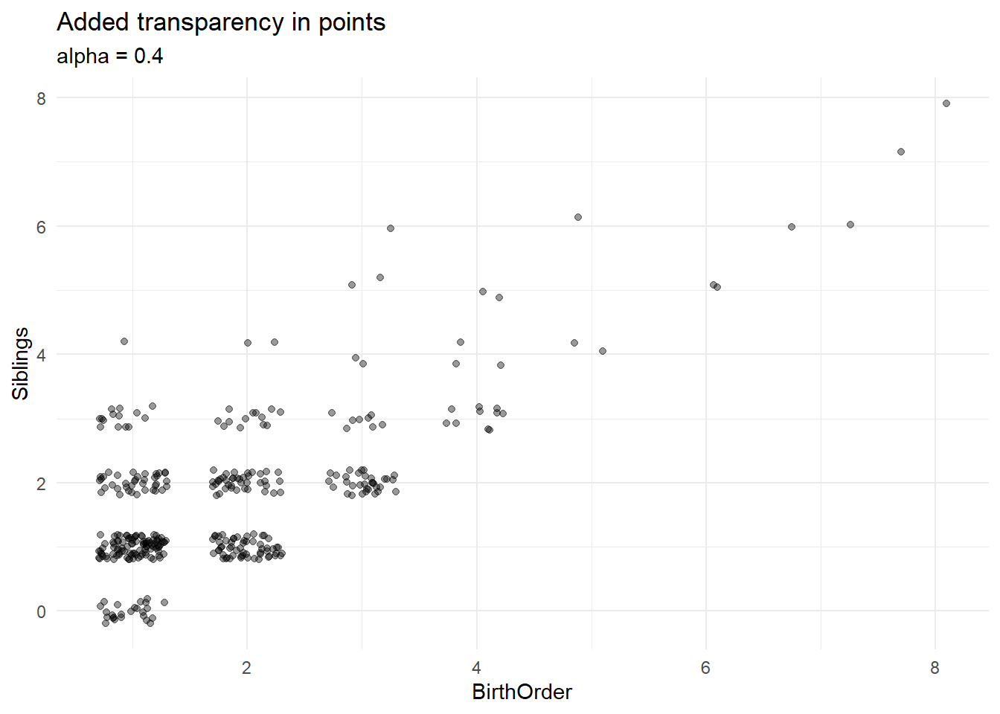
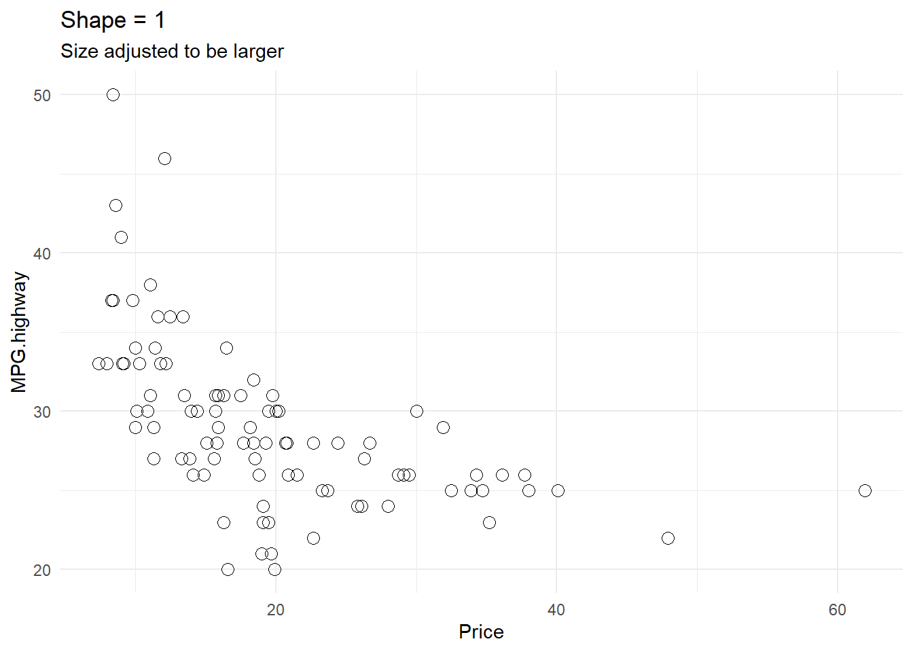

Non-Color Aesthetics
This page covers aesthetics about your visual like transparency, size, shape, and linetype. Color gets its own page - so these are just some common non-color aesthetics you may wish to change about your graph.
All changes can be make for a specific layer, be applied to a variable, and adjusted through a refine statement. Generally, all aesthetics will be adjusted as follows:
Explicitly Specified: gf_plot(Y~X, data = Dataset, size = 3)
Specified Using Variable: gf_plot(Y~X, data = Dataset, size = ~Var)
Shape & linetype in Refine Statement: gf_refine(scale_*_manual(values = c(“Value1”, “Value2”, “Value3:”)))
Size in Refine Statement (continuous): gf_refine(scale_size_continuous(range = c(1,10)))
Size in Refine Statement (discrete): gf_refine(scale_size_discrete(range = c(1,10)))
Reverse Order of Aesthetics: gf_refine(scale_*_XXX(limits = rev))
1 Transparency (alpha)
In my experience, transparency is the most commonly used non-color aesthetic that is really helpful to adjust. In all plots, transparency is adjusted using an alpha option. Alpha ranges from 1 (most opaque) to 0 (most transparent).
Example: gf_plot(Y~X, data = Dataset, alpha = 0.4)
The following figures show different levels of alpha to see the change in transparency.
alpha1 = gf_density(~body_mass_g, data = penguins, fill = ~island, alpha = 1) %>% gf_refine(scale_fill_manual(values = c("darkorange","purple","cyan4"))) %>%
gf_labs(title = "alpha = 1")
alpha7 = gf_density(~body_mass_g, data = penguins, fill = ~island, alpha = 0.7) %>% gf_refine(scale_fill_manual(values = c("darkorange","purple","cyan4"))) %>%
gf_labs(title = "alpha = 0.7")
alpha4 = gf_density(~body_mass_g, data = penguins, fill = ~island, alpha = 0.4) %>% gf_refine(scale_fill_manual(values = c("darkorange","purple","cyan4"))) %>%
gf_labs(title = "alpha = 0.4")
alpha01 = gf_density(~body_mass_g, data = penguins, fill = ~island, alpha = 0.1) %>% gf_refine(scale_fill_manual(values = c("darkorange","purple","cyan4"))) %>%
gf_labs(title = "alpha = 0.1")
grid.arrange(alpha1, alpha7, alpha4, alpha01, nrow =2)Alpha is most helpful (I feel) in seeing items that overlap. In the next subsections I give examples of different graphical elements that may overlap. In all examples, transparency is adjusted the same way (alpha = 0.3).
1.1 Overalpping Points
In the example below there are many overlapping points. Jitter certainly helps see many of these overlapping points - but some clumps are still difficult to see just how many points make up that clump. Adding transparency helps to see some of these overlapping points.
gf_jitter(Siblings~BirthOrder, data = StudentSurvey, width = 0.3, height = 0.2) %>% gf_labs(title = "Graph without transparency in points") 
gf_jitter(Siblings~BirthOrder, data = StudentSurvey, alpha = 0.4, width = 0.3, height = 0.2)%>% gf_labs(title = "Added transparency in points", subtitle = "alpha = 0.4")
1.2 Overalpping Density Ridges
In this next example, there is minor overlapping of the density plots. Add a bit of transparency to get a feel for the slight overlap.
gf_density_ridges(cut~price, data = diamonds, scale = 2, fill=~cut, show.legend = FALSE) %>% gf_labs(title = "No Transparency")## Picking joint bandwidth of 458gf_density_ridges(cut~price, data = diamonds, scale = 2, fill=~cut, alpha = 0.6, show.legend = FALSE)%>% gf_labs(title = "Added Transparency", subtitle = "alpha = 0.6")## Picking joint bandwidth of 4581.3 Overlapping Density Plots
By default the density plots do create slightly transparent densities (which is helpful!). The following example shows how to omit that transparency, and then also to adjust it to your liking.
gf_density(~body_mass_g, data = penguins, fill = ~island, alpha = 1) %>% gf_refine(scale_fill_manual(values = c("darkorange","purple","cyan4"))) %>%
gf_labs(title = "No Transparency", subtitle = "alpha = 1")gf_density(~body_mass_g, data = penguins, fill = ~island, alpha = 0.4) %>% gf_refine(scale_fill_manual(values = c("darkorange","purple","cyan4")))%>%
gf_labs(title = "Some Transparency", subtitle = "alpha = 0.4")1.4 Overlapping Histograms
Similar to the density plot (above) the histograms below are shown with no transparency (alpha = 1) and some transparency (alpha = 0.4).
gf_histogram(~body_mass_g, data = penguins, fill = ~island, position = position_identity(), alpha = 1) %>% gf_refine(scale_fill_manual(values = c("darkorange","purple","cyan4"))) %>%
gf_labs(title = "No Transparency", subtitle = "alpha = 1")
gf_histogram(~body_mass_g, data = penguins, fill = ~island, position = position_identity(), alpha = 0.4) %>% gf_refine(scale_fill_manual(values = c("darkorange","purple","cyan4")))%>%
gf_labs(title = "Some Transparency", subtitle = "alpha = 0.4")1.5 Variable Assigned to Alpha
Instead of adjusting the alpha for all points, you can vary the alpha (transparency) by a variable.
gf_point(MPG.highway~Price, data = Cars93, size = ~Weight, alpha = ~Weight, color = "purple") %>%
gf_labs(title = "Transparency adjusted by Weight", subtitle = "alpha = ~Weight")2 Shape
The default shape used in most graphs will be dots. To change from the default, we can specify shape using a number associated with the corresponding shape (see below).
show_point_shapes()## Scale for y is already present.
## Adding another scale for y, which will replace the existing scale.2.1 Changing single shape
To change the shape of all points, you can specify the specific shape within the plot command.
Example: gf_plot(Y~X, data = Dataset, shape = 1)
gf_point(MPG.highway~Price, data = Cars93) %>%
gf_labs(title = "Default Shape")gf_point(MPG.highway~Price, data = Cars93, shape = 1, size = 3) %>%
gf_labs(title = "Shape = 1", subtitle = "Size adjusted to be larger")
gf_point(MPG.highway~Price, data = Cars93, shape = 25, size = 3, fill = "darkcyan", alpha = 0.3) %>%
gf_labs(title = "Shape = 25", subtitle = "Size, fill, and alpha adjusted")2.2 Changing multiple shapes
To adjust the shape to various levels of a variable, assign a variable to the shape option in your plot.
Example: gf_plot(Y~X, data = Dataset, shape = ~Var)
Reverse Shapes Applied: gf_refine(scale_shape_discrete(limits = rev))
Specify shapes used (array): gf_refine(scale_shape_manual(values = c(10, 5, 8)))
Link specific shapes to levels of variable: gf_refine(scale_shape_manual(values = c(“Adelie” = 1, “Chinstrap” = 2, “Gentoo” = 5)))
gf_point(bill_length_mm~bill_depth_mm, data = penguins, color = ~species, shape = ~species, size = 3, alpha = 0.4) %>%
gf_refine(scale_color_manual(values = c("darkorange","purple","cyan4"))) %>%
gf_labs(title = "Assign Different Shapes to Each Species")gf_point(bill_length_mm~bill_depth_mm, data = penguins, color = ~species, shape = ~species, size = 3, alpha = 0.4) %>%
gf_refine(scale_color_manual(values = c("darkorange","purple","cyan4")),
scale_shape_discrete(limits = rev)) %>%
gf_labs(title = "Reverse Order Shape")gf_point(bill_length_mm~bill_depth_mm, data = penguins, color = ~species, shape = ~species, size = 3, alpha = 0.4) %>%
gf_refine(scale_color_manual(values = c("darkorange","purple","cyan4")),
scale_shape_manual(values = c(1, 0, 2))) %>%
gf_labs(title = "Specify List of Shapes Used")
gf_point(bill_length_mm~bill_depth_mm, data = penguins, color = ~species, shape = ~species, size = 3, alpha = 0.4) %>%
gf_refine(scale_color_manual(values = c("darkorange","purple","cyan4")),
scale_shape_manual(values = c("Adelie" = 1, "Chinstrap" = 2, "Gentoo" = 5))) %>%
gf_labs(title = "Assign Each Level of Variable to Specific Shape")3 Size
You can adjust the size of points, lines, and text in your plots. Below will be examples of each, but generally they all follow the same formula: size = 4.
3.1 Point Size
Similar to other aesthetics, you can adjust size by specifying a specific size used, assign a variable to size, and manually adjust the range of sizes used.
Specify Size: gf_plot(Y~X, data = Dataset, size = 4)
Assign Variable to Size: gf_plot(Y~X, data = Dataset, size =~Var)
Adjust Size Scale: gf_refine(scale_size_continuous(range = c(0.5, 10)))
3.1.1 Specific Size
You can change the size of every point, or, similar to the example below, you can change the size to some points to help them stand out a bit.
gf_point(MPG.highway~Price, data = Cars93) %>%
gf_labs(title = "Default Graph")gf_point(MPG.highway~Price, data = Cars93) %>%
gf_point(MPG.highway~Price, data = subset(Cars93, Manufacturer == "Mazda"), size = 4, color = "orange") %>%
gf_labs(title = "Size & Color Adjusted for Mazda Vehicles")3.1.2 Size Applied to Discrete Variable
Size can be applied to discrete variables as well as continuous. The following examples show size applied to Origin of vehicles, reversing limits of size used, and changing the range of sizes used.
gf_point(MPG.highway~Price, data = Cars93, size = ~Origin, alpha = 0.2, color = ~Origin) %>%
gf_labs(title = "Size assigned to Origin")gf_point(MPG.highway~Price, data = Cars93, size = ~Origin, alpha = 0.2, color = ~Origin) %>%
gf_refine(scale_size_discrete(limits = rev)) %>%
gf_labs(title = "Reverse Size Limits")gf_point(MPG.highway~Price, data = Cars93, size = ~Origin, alpha = 0.2, color = ~Origin) %>%
gf_refine(scale_size_discrete(range = c(1, 5))) %>%
gf_labs(title = "Specify Size Range")3.1.3 Size Applied to Continuous Variable
Size can be applied to continuous variables, as in the examples below. Size can be adjusted using the area (size_scale_continuous) or the radius of the circle (scale_radius).
gf_point(mpg~wt, data = mtcars, size = ~cyl, alpha = 0.4) %>%
gf_labs(title = "Sized by Cylinder")gf_point(mpg~wt, data = mtcars, size = ~cyl, alpha = 0.4) %>%
gf_refine(scale_size_continuous(range = c(1, 10))) %>%
gf_labs(title = "Size Range Adjusted")gf_point(mpg~wt, data = mtcars, size = ~cyl, alpha = 0.4) %>%
gf_refine(scale_radius(range = c(1, 10))) %>%
gf_labs(title = "Radius Range Adjusted")3.1.4 Binned Scales
Size that is applied to continuous variables can also be binned. More information on binned scales can be found in the ggplot2 book. The following examples show the use of binned scales as well as re-labeling binned scales.
gf_point(lifeExp~gdpPercap, data = subset(gapminder, year == 2007), size = ~pop, alpha = 0.3, color = ~country) %>%
gf_facet_wrap(~continent) %>%
gf_refine(scale_color_manual(values = country_colors),
scale_x_continuous( labels = label_comma(scale_cut = cut_short_scale())),
scale_size_continuous(range = c(1,10),labels = label_comma(scale_cut = cut_short_scale()))) %>%
gf_theme(guides(color = FALSE)) %>%
gf_labs(title = "Size Range Adjusted for Population")## Warning: The `<scale>` argument of `guides()` cannot be `FALSE`. Use "none" instead as
## of ggplot2 3.3.4.
## This warning is displayed once every 8 hours.
## Call `lifecycle::last_lifecycle_warnings()` to see where this warning was
## generated.gf_point(lifeExp~gdpPercap, data = subset(gapminder, year == 2007), size = ~pop, alpha = 0.3, color = ~country) %>%
gf_facet_wrap(~continent) %>%
gf_refine(scale_color_manual(values = country_colors),
scale_x_continuous( labels = label_comma(scale_cut = cut_short_scale())),
scale_size_binned(range = c(1,10),labels = label_comma(scale_cut = cut_short_scale()))) %>%
gf_theme(guides(color = FALSE)) %>%
gf_labs(title = "Binned Population Size")gf_point(lifeExp~gdpPercap, data = subset(gapminder, year == 2007), size = ~pop, alpha = 0.3, color = ~country) %>%
gf_facet_wrap(~continent) %>%
gf_refine(scale_color_manual(values = country_colors),
scale_x_continuous(labels = label_comma(scale_cut = cut_short_scale())),
scale_size_binned(range = c(1,10),labels = c("Very Small", "Small", "Medium", "Large", "Very Large"))) %>%
gf_theme(guides(color = FALSE)) %>%
gf_labs(title = "Adjusted Labels of Binned Scales")3.2 Line Size
Adjust the size of lines similar to how you adjust size of points. You can adjust by specifying size, or by applying a variable to size. As of the time of writing, line size can be adjusted using size = 3 or linewidth = 3 and have similar results.
default = gf_line(unemploy~date, data = economics) %>%
gf_labs(title = "Default Line Size")
line1 = gf_line(unemploy~date, data = economics, size = 1) %>%
gf_labs(title = "Line Size = 1")
line2 = gf_line(unemploy~date, data = economics, size = 2) %>%
gf_labs(title = "Line Size = 2")
grid.arrange(default, line1, line2, nrow = 3)Similar to other aesthetics, linewidth can be defined by levels of a variable (both discrete and continuous).
Adjust Discrete Linewidth Range: gf_refine(scale_linewidth_discrete(range = c(0.1, 3)))
Adjust Continuous Linewidth Range: gf_refine(scale_linewidth_continuous(range = c(0.1, 3)))
gf_line(lifeExp~year, data = gapminder, stat = "summary", fun = "mean", linewidth = ~continent) %>%
gf_labs(title = "Linewidth using Discrete Variable")## Warning: Using linewidth for a discrete variable is not advised.gf_line(lifeExp~year, data = gapminder, stat = "summary", fun = "mean", linewidth = ~continent) %>%
gf_refine(scale_linewidth_discrete(range = c(0.1, 3))) %>%
gf_labs(title = "Linewidth Adjusted on Discrete Variable")## Warning: Using linewidth for a discrete variable is not advised.gf_line(Temp~Day, data = airquality, linewidth = ~Month, group = ~Month) %>%
gf_labs(title = "Linewidth using Continuous Variable")gf_line(Temp~Day, data = airquality, linewidth = ~Month, group = ~Month) %>%
gf_refine(scale_linewidth_continuous(range = c(0.1, 3))) %>%
gf_labs(title = "Linewidth Adjusted on Continuous Variable")3.3 Text Size
Similar to points and lines, text size can be adjusted. Here is a simple example below.
gf_dist("chisq", df=5) %>%
gf_dist("chisq", df=10, col="orange") %>%
gf_dist("chisq", df=20, col="darkcyan", linetype = "dashed") %>%
gf_theme(theme_classic()) %>%
gf_text(x = 7, y = 0.12, label = "size = 3", hjust = "left", size = 4) %>%
gf_text(x = 15, y = 0.08, label = "size = 5", color = "orange", hjust = "left", size = 5) %>%
gf_text(x = 26, y = 0.05, label = "size = 7", color = "darkcyan", hjust = "left", size = 7) %>%
gf_labs(title = "Changing Size of Text")4 Line type
Line type can be adjusted similar to shape and size. The following are a list of line types available.
show_line_types()The following example specifies line types for each layer created.
gf_dist("chisq", df=5) %>%
gf_dist("chisq", df=10, col="orange", linetype = "dotted") %>%
gf_dist("chisq", df=20, col="darkcyan", linetype = "dashed") %>%
gf_theme(theme_classic()) %>%
gf_labs(title = "Chaning Line Type") %>%
gf_text(x = 7, y = 0.12, label = "solid", hjust = "left", size = 3) %>%
gf_text(x = 15, y = 0.08, label = "dotted", color = "orange", hjust = "left", size = 3) %>%
gf_text(x = 26, y = 0.05, label = "dashed", color = "darkcyan", hjust = "left", size = 3)The following examples show a few ways you can adjust line type by assigning a variable, and adjusting the specific line types used in a refine statement.
gf_point(bill_length_mm~bill_depth_mm, data = penguins, color = ~species, shape = ~species, size = 3, alpha = 0.4) %>%
gf_refine(scale_color_manual(values = c("darkorange","purple","cyan4"))) %>%
gf_lm() %>%
gf_labs(title = "Default lines are all solid")## Warning: Using the `size` aesthetic with geom_line was deprecated in ggplot2 3.4.0.
## ℹ Please use the `linewidth` aesthetic instead.
## This warning is displayed once every 8 hours.
## Call `lifecycle::last_lifecycle_warnings()` to see where this warning was
## generated.gf_point(bill_length_mm~bill_depth_mm, data = penguins, color = ~species, shape = ~species, size = 3, alpha = 0.4) %>%
gf_refine(scale_color_manual(values = c("darkorange","purple","cyan4"))) %>%
gf_lm(linetype = ~species, size = 1) %>%
gf_labs(title = "linetype different for each species")gf_point(bill_length_mm~bill_depth_mm, data = penguins, color = ~species, shape = ~species, size = 3, alpha = 0.4) %>%
gf_lm(linetype = ~species, size = 1) %>%
gf_refine(scale_color_manual(values = c("darkorange","purple","cyan4")),
scale_linetype_manual(values = c("Adelie" = "longdash", "Chinstrap" = "solid", "Gentoo" = "dotted"))) %>%
gf_labs(title = "Specify which linetypes used for each species")gf_point(bill_length_mm~bill_depth_mm, data = penguins, color = ~species, shape = ~species, size = 3, alpha = 0.4) %>%
gf_lm(linetype = ~species, size = 1) %>%
gf_refine(scale_color_manual(values = c("darkorange","purple","cyan4")),
scale_linetype_manual(values = c("longdash", "solid", "dotted"))) %>%
gf_labs(title = "Specify list of linetypes")